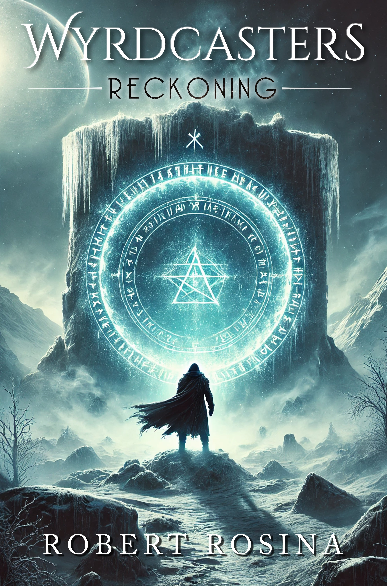

by Robert Rosina

The novel you are about to read opens an epic not just of the Norse gods and their universe, but of the human spirit, the mystery of life, of consciousness, and the nature of reality itself. Some people may wonder at how a lowly lawyer from Sydney, having had no training (or interest) in Norse history, in mythology, or in creative writing, came up with such a fantastically imaginative story. I confess, from the outset, that I have had little to do with its construction. Yes, I have converted the tale into the form of a modern fantasy novel, but to say that involved any creativity on my part would be generous. Though there is some overlap with Norse mythology, let there be no doubt that it was in fact the manuscripts of my great grandfather, Lennart Erlander, that provided me with this story in its entirety.
My great grandfather Lennart was a strange man. Shunned in his youth for being a mad eccentric — what would certainly nowadays be classified as a schizophrenic with delusions of grandeur — having poured over his "ramblings" I am now convinced there was more at play in Mad Lenn's troubled mind than lunacy. The parallels between Lennart's writings and the ancient Norse texts could be easily disregarded as plagiarism or inspiration. However, it is how they overlap that causes me the most pause: the subtle understandings, the intimate details, the "filling in the gaps" that completely, and ingeniously, reinterpret the authentic historical texts. Even more disquieting are the differences, which seem to borrow from other sources of mythology that were not known to my great grandfather, who seemed to possess a knowledge of esoteric mechanics beyond the greatest guru of the Mahabharata, and whose then-laughable predictions on developments in technology have proven uncanny, rivalling Asimov's, rivalling Verne's. There is no doubt in my mind that these are the works of a mad genius, of an Einstein, or an Oppenheimer, someone cursed with unhinged insight, capable of peering into that which would render the rest of us mentis morbus.
I have endeavoured to be as invisible as possible in my interpretation, striving to realise Lennart's vision for what it was. Something of a family embarrassment, his preserved tomes are dusted off from time to time at the behest of some historian or other who has stumbled upon their existence from a footnote of a more established figure of history. Never having had much interest in history, our family's or otherwise, I find it odd that in the end I was to be the one to modernise the material after so many a hungry author was denied the right by my great grandfather's estate. I have done this out of a deep respect for the man seldom afforded to him by others in my family, with full acknowledgement that I too, before I knew better, joined in the jokes at his expense around many family dinners and functions. Considering myself the foremost expert in his body of work, after the uncomfortable experience of realising this early part of it, I am floored by the unpolished masterpiece that was his “Novegard”.
And so, I dedicate this book to Lennart. If this book accomplishes anything, it is my hope that it in some part legitimises the inner quest of my ancestor, who toiled in the darkness so that we may see the light.
The majestic spire that was the Æsgarthian Watchtower loomed over all of reality. Within its heart, footsteps echoed in the marble stairwell as the determined son of the absentee king ascended to its peak, to the viewing room that had become his second home of transcendence and strife. To look out on the mystical twilight from there was sobering, and yet, of late, the mere sight of the highest of the realms, the perfected civilisation painted in ethereal hues of white and grey, had brought only a sense of dread.
The panoramic vista flooded his mind as he entered the circular room without exterior walls, the apex of the Watchtower suspended above him by forces unknown. The dazzling view evoked a sense of superiority, of elite power, as if alone, this lofty watcher of Æsgarth, stood at the top of the universe itself peering out onto all its wonder. The prince winced at the hubris, and proceeded to the centre. The serene energy that permeated the room brought a dizzying nausea that only worsened as the robed figure approached the dais at the heart of the boundary-less chamber. As he approached, the room expanded out infinitely in all directions, defying conventional laws of science, and stretching his mind along with it. Reality bent and warped around him, opening up to him, and flooding his senses relentlessly. The fair prince grimaced in agony, clutching his temples as he willed himself through the final steps against the forces of nature, at last collapsing onto the rune-inscribed iron dais and catching his silent breath.
As always, the short trek had altered him. His transformed mind, less a man's though not quite a beast's, adopted a silvery keenness and a cosmic, ancient, almost tribal otherworldliness. Disgusted at himself, he adopted his new mental form, pushing through the resistance as he rose to behold the dais, that multidimensional dais of the Aesir, that whispered its harsh secrets to only a cursed few. Already he could feel the thrumming currents of time beating through him, drawing him into history itself. He remembered the name Baldur, his own name, though it was by now foreign to him; and the name Odin, that enigma of a name that defied even itself. He feared how far would he go to learn its secrets. Yet it was his yearning hope, that longing for answers, perhaps even the simple want of a child to be reunited with his father, that remained familiar. That spurred him on as the young god wrestled against the merciless quantum stream, forcing it to his ends. At the zenith of the mental maelstrom, struggling to hold on to his fleeting purpose and already losing his grip on his multitudinous senses, Baldur dove into the eternal waves of time and was lost.
The metallic door to the dimly lit, hard-copy archive burst open and Trygard stumbled in, blind drunk, bringing with him the celebratory atmosphere Svolnir had been avoiding since the ceremony's conclusion. Svolnir had hoped to wait out the historic night in merciful solitude, hidden from conversations he feared would be his undoing. But the mead and the silence had done little to keep the mental chatter at bay, and with the arrival of his fun-loving partner his fate was all but sealed.
"Svoly, you promised!" Trygard spattered pulling up a nearby seat and collapsing into it, catching his balance.
"Did I?" Svolnir responded coldly. "Then I am a breaker of promises."
Svolnir reached for his drink but Trygard slapped it away before he could take the bottle.
"You've either had too much, or not nearly enough!"
Trygard took a swig himself then gave his neurotic Wyrdling partner a sympathetic look through pup’s eyes, his stubble, and loosened shirt and coat, granting him the aura of a quintessential off-the-clock associate primed to seize the town at weeks end.
"Go back to the party, Trygard."
"I don't think I will, Master 'Saviour of Heim'," he said as he looked down at the mead bottle in his hand. It was the one they had promised to open when this was all done.
"Well, shit on me," said Trygard, setting down the bottle gently and staring off through the door, his mind drifting, the faint music and the sounds of the crowd wafting in.
"This is about the residue, isn't it?"
Svolnir said nothing, a defiant look on his face. Trygard stood, his mood soured.
"You just can't let it go. We ran every test, it is well with acceptable parameters."
"Parameters for economic loss!"
Trygard shook his head disapprovingly.
"After everything, you can't just be happy, for once, and take the win. Typical Svoly, always needing a problem to solve. We have done the impossible! We have grasped it from the ether and made it ours! Would you please just take a moment to think of what we have accomplished!"
Svolnir slouched, on the edge of tears, his friend's words of encouragement the defeating blow.
"That is all I can think of, Trygard," said Svolnir, his Wyrd screaming, and his heart no longer able to outrun the truth of their crime. "And the thoughts ravage my spirit with the promise of what our accomplishment shall accomplish in our name."
Baldur tore his mind away from the erroneous vision and his consciousness returned to the rarefied plane of Æsgarth, and the Watchtower. Ignoring the sublime beauty of his surroundings, the ardent prince took a focused breath and steeled himself, detaching from the drama and refocusing on the goal: Odin. Like plunging back into deep, ice-cold waters, Baldur re-engaged the dais and descended into the past.
#
The parapet trembled from the heavy fire from the Aesirian army at their gates, and Ullric Frostbane, the White, revelled in psychotic abandon at the destruction that would be his undoing.
"My Lord, we must flee at once!"
An imposing device resembling a technologically-advanced trebuchet had begun to power up, thrumming with blue light, as the frenetic enemy pressed on in their assault against the fortress.
"Oh, how they fear he who rivals their own facsimiles," he said, the light of the machine and the weapons' fire reflecting in his own glowing eyes.
"My Lord!"
"Bring me the device from the vault," Ullric ordered, the commander's pleas unheeded.
"Lord Ullric, the Drakyonstone has vanished. There is nought left but to retreat into hiding in the mountains. Already the men have departed, we must not delay!"
With fury unmatched by mortal men, Ullric turned his shining gaze upon the heavily-armoured and battleworn officer.
"Vanished?!"
In an instant, Ullric was dangling the terrified commander over the edge with one outstretched arm.
"The Oracle, my Lord! She is unable to be found!"
Ullric squeezed, interrogating the man with a look.
"After... ugh... investigations, I suspect thy lady has anticipated this attack and... and that the stone is safe in her keeping..."
Having heard enough, Ullric let go of the commander; as he plummeted screaming to his demise to be consumed by the foray, Ullric the White seemed to vanish. A moment after the shrieking came to an abrupt end, Ullric returned, covered in blood, shortsword soaked and dripping. Taking one last look at the Aesirian forces, their mighty weapon firing its first thunderous shots, making short work of the outer defences, Ullric dropped his blade in defeat and returned to within the stronghold. As he descended the bloody stone steps, over corpses he had left behind, he pondered bitterly how close he had come to victory. The fortress shook from the impact of the machine and the ceiling began to crumble. With a slow and measured gate, mind swimming from exhausting his powers, he made his way through the tomb-like halls and into the graveyard that was once the fortress's gardens. The road to the mountains from the rear, too, was littered with bodies. There were none he had left alive. To his dismay, the body of Ullric's wife was not among them.
Baldur pulled back, discouraged by the thought of yet another day of failure, and unable to continue his attempt at forcing the Watchtower into his favoured direction. The day-star had risen, but it was far too soon for the compressive throbbing in his head, yet far too late in the hour of man to abandon the day's efforts. The weariness of his quest weighed upon him, the frustration and the feeling of being imprisoned by fate. Why was the tower resisting his desire to learn the truth, he wondered, annoyed at this final deadlock after much deliberation and sacrifice.
Baldur turned his attention to his ring, Draupnir, the heavy gold ring which had belonged to his father and now adorned his mid-finger. The perplexing band reflected the circular room strangely, and, as always, its eight mirages fanned out around his hand confounding the gaze. After Baldur had discovered its whereabouts in the bowels of Muspelheim, and toiled to retrieved it, he was sure that he had obtained the final piece to the puzzle; that the answers would be forthcoming. How absurd the thought seemed to him now.
A flash, a mere flash. A figure -- could it have been Odin? -- removing the ring and placing it within the dais, at a protrusion imperceptible to the eye. Baldur fumbled at the fleeting image, that vanished as quickly as it had appeared, as if his reaching for it pushed it further away! Galvanised by some progress at last, Baldur mimicked the shadowy figure, removing the ring and placing it upon the dais, feeling for the protrusion he could not see. Locked, the dais shifted from within, the sound of stone grinding against stone as the ring was pulled into it, and the runes lit up magnificently. The natural forces remained, but stabilised somehow, bringing a feeling of separation from the Watchtower that simultaneously reversed some of its more imposing effects. With the ring serving as a lightning rod for the wayward visions of the enigmatic tower, the currents of time seemed to part. The path had become clearer than ever, and, emboldened, Baldur surged with duty and purpose. Once more, his father's pitiless face fixed in his mind, the son of Odin descended.
The wind howled through the Iron Wood in the dead of night as Jofrid froze on the steps of the secluded cabin. The areas south of Riverfall by the Outlands were rumoured to be teeming with Frostspawn, but tonight it was the cold that Jofrid feared above all else, and it was only the thought of his ailing wife that kept his feet planted. The decrepit front door opened and the crone smiled her ghastly smile, less in greeting and more out of sadism, but she bowed and stood aside allowing her desperate visitor entry. Jofrid shuffled inside the warm, oddly-smelling cabin, removing his snow-heavy coat and boots, albeit with some difficulty as his fingers were as numb as his feeling.
"You have done well to find me, Aesirim. These woods have stifled the ambitions of many a needy man," she sneered, looking Jofrid over with approval.
"The directions... were quite clear..." said Jofrid, still shivering from the weather.
"Warm yourself," she barked, gesturing to the fire, and making her way to the kitchen and the kettle. "When you are able, we shall discuss the matter of your visit."
"I am... able... now," said Jofrid, convincing nobody. The witch simply ignored him and prepared tea for one as Jofrid did as instructed. By the time she handed the mug to him, feeling had returned to his extremities and with it a sensation of quiet exhaustion.
"You are terrified," she said savouring the emotion.
"Yes," said Jofrid, his mind hard and focused.
"But not of me," she said, somewhat disappointed.
"It is my wife."
The witch pulled away and eyed the man.
"Pregnant," she said nodding with understanding.
Jofrid's suspicions eased somewhat; if she was a charlatan, she had researched well.
"It has been... irregular," said Jofrid, knowing he could not trust to this stranger yet aware that his options were few and his need great. "She is in near constant agony. She doesn't sleep. She refuses to eat anything but raw meat. Her only respite is a trance that seems to offer her sublime relief, but in that blissful state she is taken to ranting of delusions of an utterly terrifying nature. I fear she has become possessed by some foul being, though even to utter these words is a stab in my heart at how I betray her and my unborn son."
"You are a man of fine clothes and a finer tongue, Assemblyman. And I dare say a fine mind. Your wife's case would be clear to all as a most present danger. Yet you have come to Ironwood, at the Empire's edge, the world's edge, and not Stormhold, that fine city with its Dvergar and Pionics. Have you so little faith in the mechanical wonders of your fine people?"
There was a mocking undertone to the witches’ words, as if she savoured the opportunity to see an Aesirian crawl to her in an hour of need.
"The Aesirian people have a generation hence outlawed the use of Dvergar and Pionics. The frost has become... increasingly hostile to any technology of that nature. The risks in even the most limited of use are now too great."
"Yes, a pity," she snarled, though how any could not have been aware of the fact after nearly three decades was beyond Jofrid's guess.
"My father has in his employment a private physician, she is trustworthy, and yet..."
Jofrid felt a lump in his throat, not quite sure how to continue.
"We have reason to believe the issue is of an... otherworldly nature."
"You know full well that it is!" she hissed, the facade of her politeness dropping to reveal the bile. "Do not think because I have accepted your coin that I must suffer your deceptions and your meandering!"
The fireplace flicked green for a moment and returned to normal.
"Out with it!"
Jofrid forced out the words that seemed to be blocked in his mind by a mighty shield.
"Wyrdcaster. The child she carries, there can no longer be any doubt."
"Is he?" said the witch, once again savouring the moment. "And you know this how?"
"There have been many omens too direct to ignore. Yet ignore them I did, for as long as I could. Then came the visions and the terrible sickness. I thought my wife was going mad. I hoped... But the pregnancy has held for much too long. Fourteen months and no sign of an end. And the things my wife is able to do..."
Jofrid stared out at the cascade of impossible memories of his wife that had plagued his mind ever since.
"The pregnancy has eaten her through -- life has all but fled from her! She is less than a husk of herself, hanging by a silk thread. Each night could be her last, and I fear I will return home to a corpse! Our physician is certain she will not survive delivery; she has begged us to terminate for the sake of the mother... Please, if you have any means of saving them both, I would be in your debt."
"My debt, you say?" mused the witch, finally hearing the terms she was waiting to hear, and turning away as if to conceal her salivation at the prospect; and the piping tea within Jofrid's palms seemed to grow suddenly cold.
"The Colonel will see you now, Assemblyman Stormr."
Jofrid rose from his heated leather seat in the antechamber and smiled politely at the receptionist, the view of the weathered city of Stormhold behind her spectacular and clearly meant to impress.
"Colonel," Jofrid said, extending his arm as the Colonel rose to greet him. "My thanks for your time."
"Come now, Jofrid," said the Colonel jovially, grasping the man's wrist in friendship. "Let us set aside the weight of rank and station momentarily. How often these days does one get the opportunity to reconnect with old friends?"
"These days, Morgrim?" said Jofrid wearily. "Not often enough," agreeing to the implied terms of the meeting the Colonel had set as he vocalised his agreement.
"How about a drink? No doubt your tastes have matured since those days at college, but day the word and I'll have a cask of the old swill brought up!"
"Apologies, old friend," said Jofrid declining the offer. "The day will come when we can raise our horns high in celebration, but I fear today we must turn our tongues with haste to darker, more immediate matters ill fit for toasts."
"Let us hasten the day's arrival," the Colonel said soberly, and he gestured for Jofrid to sit opposite his grandiose, presidential desk.
"My wife has borne a child, Morgrim."
Colonel Morgrim leaned back into his throne like chair, his face darkening.
"Another man's?" he asked bluntly.
"No! No, nothing like that," said Jofrid, frightened at the thought of what his "old friend" would do with such information.
"And yet your face is long and weathered with stress, when you should be leaping for the mead."
"The child is... unwell," said Jofrid, evading the issue.
"I am sorry to hear it, Jofrid," said Morgrim sympathetically. "Tell me of the child's illness, perhaps together, with our joint resources, we can find a treatment for the Stormrchild."
Jofrid sighed a jagged sigh, realising his next words could either doom is newborn son, or save him.
"My son is a Wyrdcaster," he said, dropping the truth of it like an explosive into the heart of the battlefield. To his credit, Colonel Morgrim did not flinch, he did not reach for the intercom and summon the guards, nor did he look on in fear and judgement. The Colonel simply rose from his seat, walked to his liquor cabinet, and withdrew a bottle from the top shelf, as well as a pair of crystal horns. Returning, he poured two drinks, sliding one over to his tortured old friend.
"The Agency is at our doorstep," Jofrid blurted in panic. "The initial tests have already been completed, there was nothing we could have done without raising suspicion! They'll come for him, Morgrim. They may already be coming for him as we speak!"
Morgrim tapped the rim of the crystal horn with a finger, his look stern and demanding. Compliant, Jofrid downed the exquisite, syrupy mead, which burned his chest and throat but settled his nerves, and went silent.
"We were inoculated against the Wyrdcaster gene, General," said Jofrid. "We have no idea how the mutation took hold. The conception, the birth, it was all perfectly... uneventful. Until... it wasn't."
Morgrim sat in contemplation for a time, looking on at a simulacrum of the planet of Heim on his desk by the ceremonial sword at its front.
"Retrieval of the tests is the first priority," said Morgrim, detailing the plan of attack. "It is hardly surprising they have not come for your son; after repeated budget cuts following the frost incursion closing the Vanirian Gap their backlog is notoriously long. His records will need to be doctored, and safeguards put in place."
"Of course," said Jofrid with the deepest gratitude.
"How is Eidvaka?"
"Her mind has recovered, though she is still far too frail..."
"I shall see to her treatment, but there is to be no other medical intervention. It all goes through private channels, whether it’s a scrape of the arm or disembowelment."
Jofrid's mind turned to the non-medical intervention provided by the potions of the Ironwood witch, but said nothing.
"My thanks, Morgrim," said Jofrid, his thoughts turning to the cost of this generosity. "How can we ever repay you?"
Morgrim poured another drink for Jofrid, his own drink still sitting idle on the desk.
"You are to resign from the Assembly," Morgrim said, his words equal parts command and threat. "Find a place away from civilisation, yet still within the borders of the Empire, take your wife and your son, steering well clear of your father and his treachery, and enter an early retirement of absolute seclusion."
The request baffled Jofrid, for the resignation would nullify any political influence Morgrim had over the Assemblyman. Yet knowing the man as he did, the twisted, brilliant machinations of his politically ruthless mind, Jofrid stiffened at the thought of how the manoeuvre fit into the delicate balance of the Colonel's greater plan. As if sensing the man's hesitation, Morgrim lifted his crystal horn an inch from the desk, staring Jofrid dispassionately in the eye as he awaited a response. Cornered by fate, and consumed by the weight of his own failure, Jofrid raised his horn in sombre agreement. For he knew had traded death and annihilation for twin debts of unknown quantities, and -- in an effort to salvage his sense of worth -- his mind turned to that impending exile, where he vowed he would with singular focus defend his family from the fallout of a father's poor choices.
Baldur inched back from the unfolding Stormr family history pouring into his mind. With increasing confidence, spurred by his partial success at compelling the mechanism to his father's first days, and hoping at last to locate the man himself, Baldur willed the temporal adjustment, his father's juvenile years passing by like falling rain till the rain could be compelled to fall no more.
* * *
Continue the full journey in Wyrdcasters: Chaos in a Dying Realm, releasing late 2025.